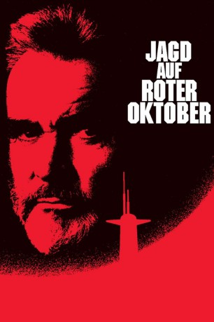
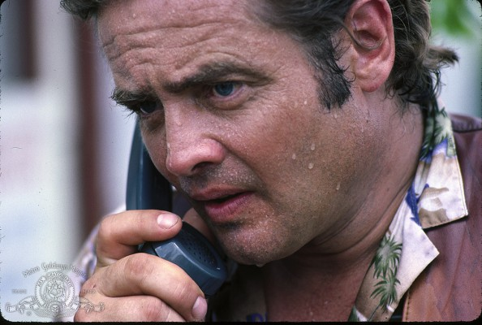
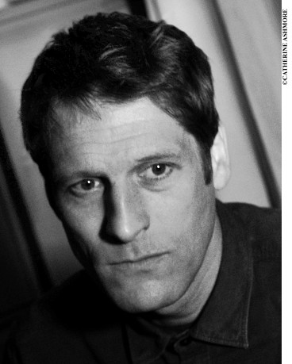

#1567 Jack Ryan 1 - Jagd auf 'Roter Oktober'
Alternativ: The Hunt for Red October
Auszeichnungen: 1 Oscars gewonnen für 2 Oscars nominiert
 
 IMDB-Wertung: 7.6 / 10
IMDB-Wertung: 7.6 / 10  Metascore: 58
Metascore: 58 
Der russische Kommandant Ramius setzt sich samt Mannschaft mit seinem dank neuer Antriebssysteme nahezu unortbaren Atom-U-Boot "Roter Oktober" in Richtung Westen ab. Einem US-U-Boot gelingt es, die "Roter Oktober" zu orten. Der Krisenstab befürchtet, Ramius plane auf eigene Faust einen Angriff auf die USA. Nur CIA-Agent Jack Ryan glaubt, dass es sich bei Ramius um einen Überläufer handelt. Er geht an Bord des US-U-Boots und nimmt Kontakt mit Ramius auf, der sich als Überläufer entpuppt, seine Mannschaft aber im Glauben gelassen hat, ihr Einsatz sei ein Angriff. Mit vereinten Kräften gilt es nun, die Attacke eines russischen U-Boots abzuwehren.
Jahr: 1990
Dauer: 135 Minuten
FSK: 12
Land: USA Studio: Paramount PicturesTonspuren: DD5.1 - ,
Untertitel: Deutsch, Englisch,
Auflösung: 1080p (1920x816) Größe: 10065 MB
Genre: Action, Abenteuer, Thriller
Regisseur:  John McTiernan
John McTiernan
Drehbuch: Tom Clancy, Larry Ferguson, Donald E. Stewart, David Shaber
Soundtrack: Basil Poledouris
Darsteller:
 Sean Connery als Marko Ramius
Sean Connery als Marko Ramius Alec Baldwin als Jack Ryan
Alec Baldwin als Jack Ryan Scott Glenn als Bart Mancuso
Scott Glenn als Bart Mancuso Sam Neill als Captain Borodin
Sam Neill als Captain Borodin James Earl Jones als Admiral Greer
James Earl Jones als Admiral Greer Joss Ackland als Andrei Lysenko
Joss Ackland als Andrei Lysenko-  Richard Jordan als Jeffrey Pelt
 Peter Firth als Ivan Putin
Peter Firth als Ivan Putin Tim Curry als Dr. Petrov
Tim Curry als Dr. Petrov Courtney B. Vance als Seaman Jones
Courtney B. Vance als Seaman Jones Stellan Skarsgård als Captain Tupolev
Stellan Skarsgård als Captain Tupolev Jeffrey Jones als Skip Tyler
Jeffrey Jones als Skip Tyler Timothy Carhart als Bill Steiner
Timothy Carhart als Bill Steiner Fred Dalton Thompson als Admiral Painter
Fred Dalton Thompson als Admiral Painter- Daniel Davis als Captain Davenport
 Ned Vaughn als Seaman Beaumont - USS Dallas
Ned Vaughn als Seaman Beaumont - USS Dallas- Mark Draxton als Seaman - USS Dallas
 Pete Antico als Seaman - USS Dallas
Pete Antico als Seaman - USS Dallas Ronald Guttman als Lt. Melekhin - Red October
Ronald Guttman als Lt. Melekhin - Red October- Tomas Arana als Loginov, Cook - Red October
 Ivan G'Vera als Officer #2 - Red October
Ivan G'Vera als Officer #2 - Red October Sven-Ole Thorsen als Russian COB - Red October
Sven-Ole Thorsen als Russian COB - Red October Boris Lee Krutonog als Slavin - Red October
Boris Lee Krutonog als Slavin - Red October Ping Wu als Seaman - Red October
Ping Wu als Seaman - Red October- Herman Sinitzyn als Seaman - Red October
- George Saunders als Seaman - Konovalov
 Rick Ducommun als Navigator C-2A
Rick Ducommun als Navigator C-2A Andrew Divoff als Andrei Amalric
Andrew Divoff als Andrei Amalric- A.C. Lyles als Advisor #1
 Gates McFadden als Caroline Ryan
Gates McFadden als Caroline Ryan Shane Black als USS Reuben James Crewman , uncredited
Shane Black als USS Reuben James Crewman , uncredited- John 'JC' Grant als Russian Sailor , uncredited
 Peter Jason als USS Reuben James Commander , uncredited
Peter Jason als USS Reuben James Commander , uncredited- James Michael Kaura als Flight Deck Crew, Background , uncredited
- Larry Ferguson als Chief of the Boat
- Anthony Peck als Lt. Comm. Thompson - USS Dallas
-  Tom Fisher als Seaman - USS Dallas
- Michael George Benko als Ivan - Red October
- Anatoli Davydov als Officer #1 - Red October
- Artur Cybulski als Diving Officer - Red October
- Michael Welden als Kamarov - Red October
- Kenton Kovell als Seaman - Red October
- Radu Gavor als Seaman - Red October
- Ivan Ivanov als Seaman - Red October
- Krzysztof Janczar als Andrei Bonovia - Konovalov
- Vlado Benden als Seaman - Konovalov
- Don Oscar Smith als Helicopter Pilot
- George H. Billy als DSRV Officer
- Reed Popovich als Lt. Jim Curry
- Peter Zinner als Admiral Padorin
Datei: X:\5-Pentalogie(A-Z)\Jack Ryan\Jack Ryan 1 - Jagd auf 'Roter Oktober' (1990, FSK12, 1920x816).mkv seit 22.07.2015
Festplatte: HD Collection-3(N-Z)-6(A-Z)
 Es gibt insgesamt 8 Filme in der Gruppe '5-Pentalogie(A-Z)\Jack Ryan'
Es gibt insgesamt 8 Filme in der Gruppe '5-Pentalogie(A-Z)\Jack Ryan'